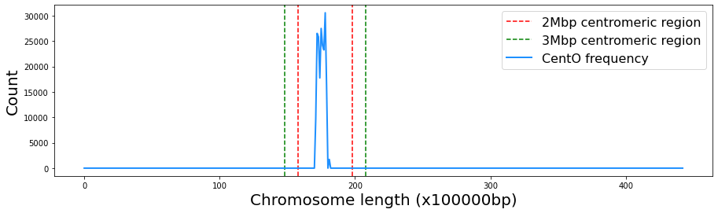

Written by Camila Riccio, Mauricio Peñuela, Camilo Rocha and Jorge Finke
Last update: 04/04/22
CentOFinder¶
This is a Python3 implementation to predict the centromere of rice chromosomes using CentO sequences.
Setup¶
Clone the repository:
git clone git@github.com:criccio35/CentOFinder.git
Requirements¶
Install the requirements by entering the following commands in the terminal:
Install biopython module:
pip install biopython
Install Basic Local Alignment Search Tool (BLAST):
sudo apt update
sudo apt install ncbi-blast+
Example¶
The file test.py contains an example that illustrates how to use the code to detect the centromere location in chromosome 01 of the Oryza sativa Indica Group cultivar:IR64. Other IR64 chromosome sequences are available in the NCBI Genome database under the accession number RWKJ00000000.
Below is a more detailed explanation of the same example:
Import module:
import CentOFinder as cf
Input CentO fasta file path:
CentO_path = 'input_data/CentO_AA.fasta'
Input chromosome fasta file path:
chromosome_path = 'input_data/Osat_IR64_AGI_NSD_chrOK.id_chr01.fasta'
Input window size. A window size between 2 to 3 Mbp is recommended since the size of the centromeric region of rice oscillates in this range, being different for each chromosome:
size_w = 200_000
Instantiate the CentOFinder class:
centromere = cf.CentOFinder(CentO_path, chromosome_path, size_w)
Call the method to detect the centromere:
centromere.detect_centromere()
The above prints the following:
Chromosome length: 44350042 base pairs
Window size: 200000
Total chromosome whindows: 221
----------------------------------------
Approximate location of centromere:
Window number: 86
Window interval (base pairs): [17200000,17400000]
Plot the result
{kind=link}